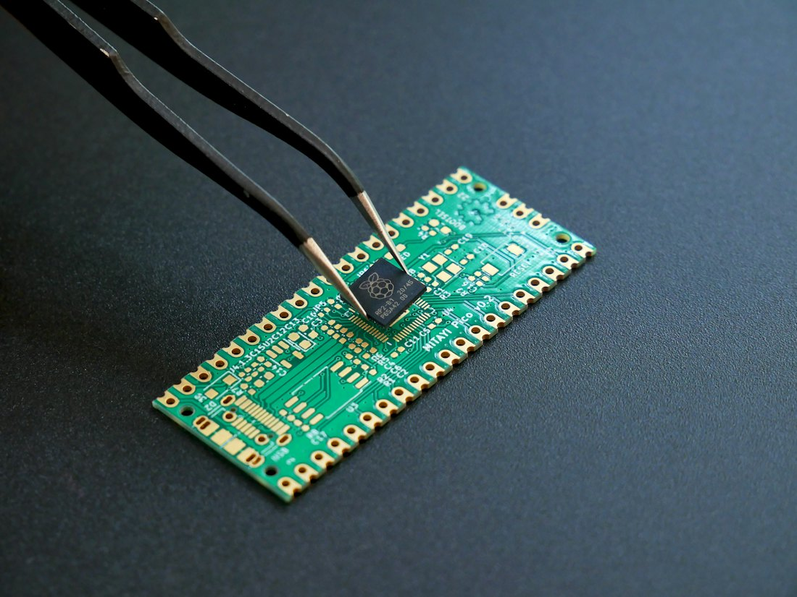

Repararea și deservirea tehnicii electronice
Radiomecanic
- Durata
- luni
- Lecții
- 2 cu prezență + 1 online pe săptămână
- Cost
- lei / lună
- Certificat
- categoria 3, 4 sau 5
Ce veți învăța
- Să cunoașteți componentele și să citiți schemele electrice de principiu
- Să depistați și să înlăturați defectele tehnicii analogice și digitale
- Să reparați surse de alimentare în comutație, laptopuri, monitoare, televizoare
- Să lucrați cu microcontrolerele AVR (Atmel)
- Să montați sisteme „casă inteligentă” pe Tuya: Wi-Fi, Bluetooth, ZigBee